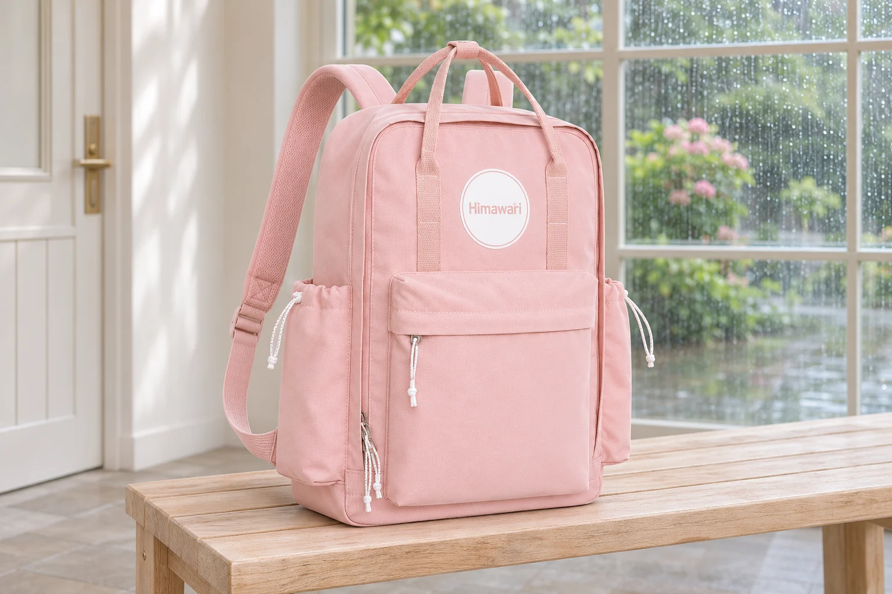
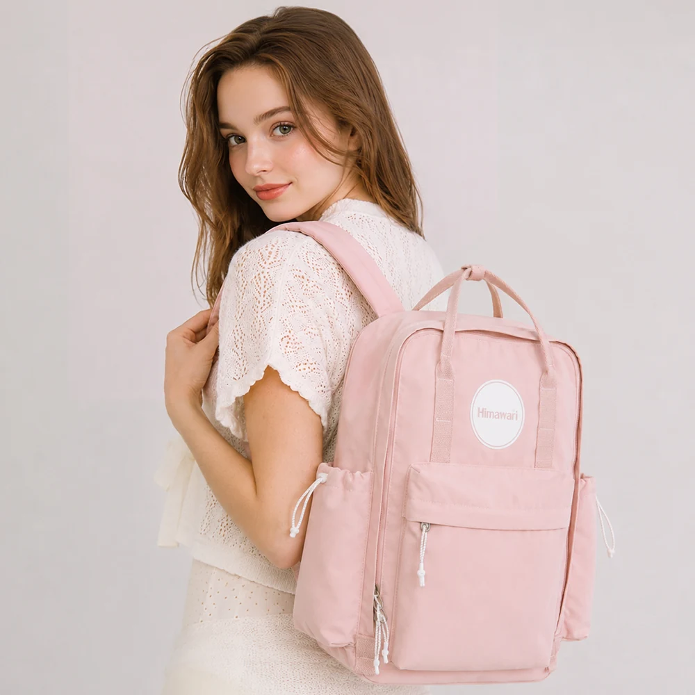
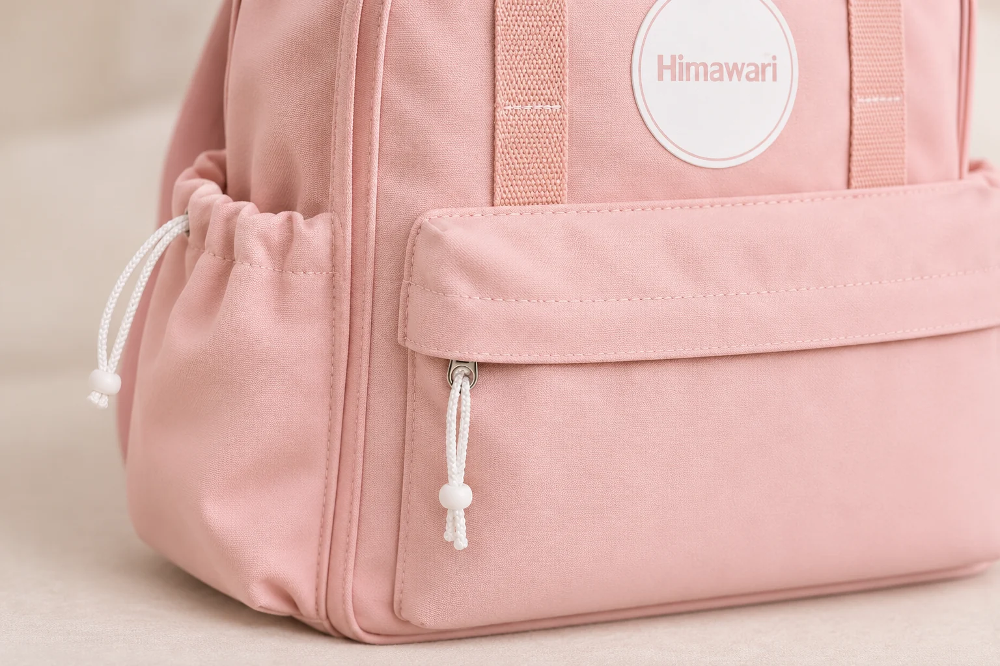

생활방수 원단을 쓴 백팩, 가방 전체가 방수라는 뜻일까

백팩 설명에서 생활방수라는 말을 만나면 비 오는 출근길을 떠올립니다. 가방 안의 노트북과 종이까지 괜찮을지 궁금해집니다. 이때 설명이 가리키는 대상을 끝까지 읽어야 합니다. ‘생활방수 원단 사용’은 원단에 관한 안내입니다. 이 한 문장만으로 지퍼와 봉제부를 포함한 가방 전체의 방수 성능이나 내용물 보호를 확인할 수는 없습니다.
히마와리 No.1089 핑크의 제품 정보에도 ‘생활방수 원단 사용’이라고 적혀 있습니다. 겉감과 안감은 모두 폴리에스터이며 외부 크기는 가로 29.5 × 세로 42 × 폭 12cm, 무게는 700g입니다. 소재와 크기는 확인됐지만 비를 견디는 조건은 별도로 읽어야 합니다. 이 가방을 예로 원단 표기에서 알 수 있는 범위와 우천 사용을 결정할 때 남는 질문을 살펴봅니다.

원단이라는 말 뒤에 남는 조건
가방의 넓은 몸판을 이루는 천과 완성된 백팩은 확인할 대상이 다릅니다. 천에 물이 닿았을 때의 성질을 설명하더라도 그 천을 이어 붙인 자리나 물건을 넣는 입구까지 같은 조건이 되는 것은 아닙니다. 가방 전체가 물의 유입을 얼마나 막는지 판단하려면 몸판 밖의 구조도 함께 봐야 합니다.
No.1089의 현재 제품 안내에서는 IP 등급이나 내수압 수치, 비를 맞아도 되는 시간을 확인할 수 없습니다. 생활방수라는 표현에 임의의 숫자를 붙여 읽지 않는 편이 정확합니다. 등급이 적혀 있지 않다고 이 가방의 실제 성능이 어느 수준인지 반대로 단정할 근거도 없습니다. 시험 자료를 받는다면 원단 견본을 확인한 것인지, 입구를 닫은 완성품을 확인한 것인지도 함께 읽습니다. 결과의 대상과 조건이 있어야 지금 고르는 백팩에 적용할 수 있는지 판단할 수 있습니다.
폴리에스터라는 소재 이름으로 이 빈칸을 채울 수도 없습니다. 겉감과 안감의 섬유명이 같아도 두 천이 물을 똑같이 막는다는 정보는 나오지 않습니다. 원단의 구체적인 처리 방식과 가방 전체의 성능은 각각 확인할 항목입니다. 생활방수 표기에서 특정 코팅의 종류까지 추정하지 않습니다.
핑크 몸판에서 입구 쪽으로 시선을 옮기면
No.1089의 실제 사진에는 네모난 핑크 몸판과 앞주머니, 몸판 둘레를 따라 이어지는 지퍼가 보입니다. 양옆에는 위쪽 입구를 끈으로 조이는 주머니가 있습니다. 넓은 몸판만 바라볼 때와 달리 입구를 따라가면 가방 안팎이 만나는 자리를 찾을 수 있습니다.
지퍼가 닫힌 모양과 물의 유입을 막는 성능은 따로 확인해야 합니다. 앞주머니 입구 위를 덮는 천이 보여도 그것만으로 밀폐를 판단하기는 어렵습니다. 옆주머니의 끈을 조인 상태 역시 어느 조건에서 물을 막는지 알려주지 않습니다. 주수납부를 닫았다는 사실이 바깥 주머니의 열린 부분까지 설명하지는 않습니다.
ORTLIEB의 방수 구조 안내는 코팅 원단과 용접한 이음부, 여밈을 함께 설명합니다. 가방 전체의 방수 성능을 볼 때 원단 외의 부위도 살펴야 한다는 참고 자료입니다. No.1089에 같은 제작 방식이나 성능이 적용됐다는 근거로 옮겨 쓸 수는 없습니다.
봉제선이나 지퍼를 물이 들어올 수 있는 경로로 살펴본다고 No.1089의 특정 부위에서 실제로 물이 샌다고 말하는 것은 아닙니다. 사진으로 보이는 위치와 성능 자료로 확인할 내용을 구별하는 과정입니다. 지퍼의 종류나 봉제부 처리 방식이 궁금하다면 사진에서 해당 부위를 지정해 문의할 수 있습니다.

물방울 사진은 무엇을 보여줄까요
백팩 표면에 동그란 물방울이 맺힌 사진은 물을 막는다는 인상을 줍니다. 사진에서는 그 장면의 표면이 직접 보입니다. 물이 닿은 뒤 안쪽이 어떤 상태였는지, 입구와 봉제부는 같은 조건을 받았는지까지 한 장으로 확인하기 어렵습니다. 물방울의 모양을 가방 전체의 시험 결과로 읽으면 확인 범위가 넓어집니다.
원단 표면에서 물이 맺히는 모습과 물이 천을 통과하는지는 구분해서 봐야 합니다. 여기에 가방의 여밈 상태까지 더해지면 질문은 다시 달라집니다. No.1089의 원단 표기와 물방울 사진이 함께 제시되더라도 안쪽 내용물이 젖지 않는다는 설명까지 자동으로 따라오지는 않습니다.
연출 사진이라면 그 한계는 더 분명합니다. 비 오는 배경이나 표면의 물방울은 글의 상황을 설명하는 장면으로 볼 수 있습니다. 실제 제품을 일정한 조건에서 시험한 기록인지는 별도로 확인해야 합니다. AI로 만든 장면도 제품의 방수 성능을 입증하는 자료로 사용할 수 없습니다.
잠깐 튄 물과 계속 맞는 비를 같은 장면으로 묶지 않기
건물 입구로 들어가는 사이에 물이 조금 튀는 날과 비를 맞으며 계속 걸어야 하는 날은 가방에 기대하는 조건이 다릅니다. 같은 출근길이라도 우산 아래에서 가방이 놓이는 위치, 바람 때문에 비가 닿는 방향, 이동 중 가방을 여는 일이 달라집니다. 짧은 노출과 반복되는 노출을 생활방수 한 단어로 묶으면 자기 일정에 필요한 정보를 놓치기 쉽습니다.
여기서 몇 분까지는 괜찮다는 경계선을 만들 수는 없습니다. No.1089의 안내에는 그 시간을 정할 시험 조건이 없기 때문입니다. 잠깐이면 반드시 괜찮다고 보장하거나 오래 걸으면 반드시 젖는다고 단정하는 대신, 계속 비를 맞는 이동에 사용할 수 있다는 별도 안내가 있는지 확인합니다.
가방을 여는 장소도 함께 떠올려 볼 만합니다. 몸판이 비를 맞는 상황과 입구를 열어 내용물을 꺼내는 상황에는 서로 다른 경로가 생깁니다. 지붕 아래에서 물건을 꺼낼 수 있는 일정인지, 길에서 자주 주머니를 열어야 하는지 적으면 판매처에 전달할 사용 조건이 구체적입니다. 이런 행동이 제품의 방수 등급을 높여 주는 것은 아니며 원단 표기에서 빠진 질문을 찾는 데 도움이 됩니다.
노트북을 넣는 날에는 보호 조건을 따로 확인합니다
No.1089에 전자기기를 넣고 싶다면 백팩의 생활방수 표기와 기기에 필요한 보호 조건을 따로 확인합니다. 일반 파우치에 넣었다는 사실만으로 물의 유입을 막는 성능까지 기대하기는 어렵습니다. 별도 보호 케이스를 고를 때도 그 제품이 안내하는 용도와 여밈 방법, 허용 조건을 읽어야 합니다. 케이스를 더했다는 이유만으로 모든 우천 상황에서 내용물이 보호된다고 보장할 수는 없습니다.
문의는 모델과 일정을 함께 적으면 짧아집니다. No.1089 핑크에 노트북을 담아 비 오는 날 도보로 이동하려는데 원단 외에 지퍼와 봉제부까지 포함한 방수 안내가 있는지 물을 수 있습니다. 답변이 원단 설명에 머문다면 완성된 가방의 성능은 여전히 확인 전으로 남깁니다. 다른 모델이나 다른 브랜드의 시험 수치로 대신 채우지 않습니다.
No.1089 핑크 제품 정보를 후보에 남길 때는 ‘생활방수 원단 사용’이라는 원래 문구와 자신에게 필요한 우천 조건을 나란히 적어 보세요. 계속 비를 맞는 이동에서 내용물을 보호해야 한다면 그 조건을 확인할 자료가 구매 판단에 더 필요합니다. 원단 안내를 정확히 읽으면 마음에 든 백팩에 무엇을 기대할지, 어떤 답을 더 받아야 할지 구체적으로 정할 수 있습니다.